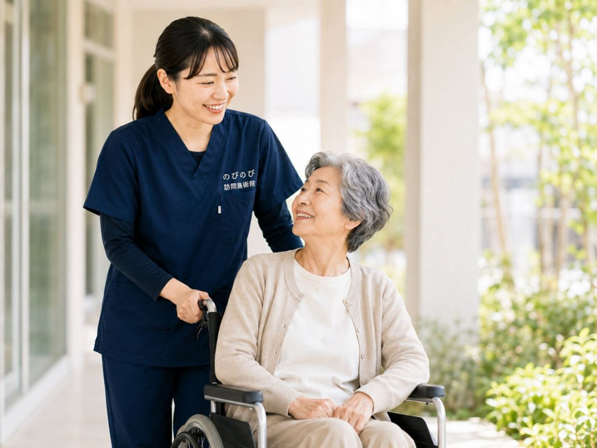

口を開けるとあごが痛む、大きく開かない、かむと音がする、朝起きるとあごがだるい。こうした顎関節症の悩みは、あごを動かす筋肉や、つながっている首・肩のこわばりと深く関わっています。関節そのものの診断・治療は歯科（口腔外科）の役割ですが、まわりの筋肉をゆるめる部分は、ご自宅にうかがう鍼灸・マッサージでお手伝いできます。
はじめに要点だけ。あごの関節そのものの診断・治療は歯科（口腔外科）などの役割です。ただ、あごを動かす筋肉や、それとつながる首・肩のこわばりを和らげることは、訪問鍼灸マッサージがお手伝いできます。医師が施術を必要と認め、通院がむずかしい状態なら、はり・きゅうの医療保険の対象になる場合があります。口が急に開かなくなった、強い腫れや発熱をともなうときは、まず歯科・口腔外科を受診してください。
あごの不調は、かむ筋肉と深く関わる
顎関節症は、あごの関節や、あごを動かす筋肉に不調が起こるものです。口を開け閉めするときの痛みや音、大きく開けられない、といった形であらわれます。背景には、歯のかみしめや歯ぎしり、片側だけでかむくせ、緊張による筋肉のこわばりなどが重なっていることが多いものです。あごを動かす筋肉は、こめかみや頬、首や肩の筋肉ともつながっていて、あごだけの問題にとどまらないこともよくあります。
こんなときは、先に歯科・医療機関へ
口が急に開かなくなった、あごがはずれたような感じがする、あごや口のまわりが強く腫れて熱をもつ、発熱をともなう、かみ合わせが急に大きく変わった。このようなときは、関節や歯の急な問題、感染などが疑われますので、まず歯科・口腔外科などを受診してください。鍼灸は、こうした急を要する状態がないことを確かめたうえで、筋肉のこわばりを和らげる面で支えていきます。
鍼灸・手技でできること
訪問鍼灸マッサージにできるのは、関節そのものを治すことではなく、あごを動かす筋肉（こめかみや頬のあたり）や、つながっている首・肩のこわばりを和らげ、めぐりをうながすことです。かみしめが強い方は、これらの筋肉が固くなっていることが多く、そこがゆるむと、あごの動かしやすさや痛みの感じ方が変わったと話される方もいます。感じ方には個人差があります。あごに強い刺激を加えるのではなく、まわりのこわばりをやさしくほどいていく、という考え方でケアします。
首・肩のこわばりも、あわせて整える
あごの不調は、首や肩のこりと関わっています。前かがみの姿勢やかみしめが続くと、首の付け根から肩、こめかみにかけて張り、それがあごの負担を強めます。うかがったときは、あごまわりだけでなく、首・肩・背中の状態も確かめ、体全体のバランスを見ながら整えます。首や肩がゆるむと、あごが動かしやすくなる方もいるため、広く見てケアすることを大切にしています。
ご家庭で、続けたい心がけ
かたいものを無理にかまない、大きなあくびに気をつける、頬づえをつかない、日中に上下の歯を離しておく。こうした心がけが、あごの負担を減らします。あごや頬を温めると、こわばりが和らぐこともあります。ただし、強い痛みや腫れがあるときは温めずに受診が必要です。うかがうたびに、その方に合ったかみしめの気づき方や、負担の少ない過ごし方をお伝えします。
食べること・話すことを支える
あごは、食べる・話すという毎日の基本を支える大切な部分です。あごが痛むと、やわらかいものばかりになったり、人と話すのがおっくうになったりして、暮らしの張りや栄養にも関わってきます。関節そのものは歯科にお任せしつつ、まわりの筋肉のこわばりを和らげ、動かしやすさを支えることで、食べる・話す毎日を後押しできればと考えています。通院がつらい方こそ、自宅で受けられる形を知っていただきたいと思います。
眠っている間の食いしばりにも目を向けて
あごの負担は、日中だけでなく、眠っている間の歯ぎしりや食いしばりでも生じます。朝起きたときにあごや頬がだるい、歯がすり減っていると歯科で言われた、という方は、睡眠中に強くかんでいることがあります。眠っている間のことは自分では気づきにくいものですが、日中にかみしめないよう意識する、就寝前に頬やこめかみをやさしくほぐす、といったことが助けになります。うかがうたびに、こわばりの強い部分を確かめ、就寝前にご家庭でできるほぐし方もお伝えします。
入れ歯が合っていないだけのこともあります
あごの痛みや開けにくさが、かならず顎関節症とは限りません。入れ歯が合っていないと、かみ合わせの高さが変わり、あごを動かす筋肉に余計な力がかかります。それが痛みやだるさとして出てくることがあります。
入れ歯を作り直した時期や、調整してもらった直後から症状が出はじめたなら、まず歯科で診てもらうのが先です。かみ合わせが整うと、あごまわりの負担そのものが減ります。
入れ歯が合わなくなってきたときの見きわめと相談先は、入れ歯が合わなくなってきたご家族へのページにまとめています。私たちがお手伝いできるのは、かみしめで固くなった筋肉や、首・肩のこわばりのほうです。
費用と保険のこと
あごまわりや首・肩の慢性的な痛み・こわばりについて、医師が鍼やお灸を必要と認め、通院がむずかしい状態であれば、はり・きゅうの医療保険が使える場合があります。1回の総額は3,950円で、自己負担は負担割合の分のみ。1割の方でおよそ395円が目安です。対応エリア内であれば出張費は別にかかりません。歯科での治療とは別に、体のケアとして並行して受けられます。お支払いは月ごとにまとめてで、その月の施術の内訳がわかる明細をお渡しします。金額の根拠については料金のページで説明しています。
緊張が続くと、あごはこわばりやすい
あごのこわばりは、こころの緊張とも関わることが知られています。気を張る場面が続くと、無意識に歯を食いしばり、あごや首の筋肉が固くなりがちです。ご本人が気づかないうちに、肩や首までこわばっていることも少なくありません。体のこわばりを和らげることは、あごの負担を軽くするだけでなく、ほっと力を抜く時間にもつながります。うかがったときは、あごや首・肩の張りを確かめながら、体全体をゆるめることを大切にします。
始めるまでの流れ
はじめに、お電話などで、あごの痛む場面や口の開けにくさ、かみしめのくせ、通院している歯科・医療機関をお聞かせください。診断をふまえ、あごまわりや首・肩へ鍼灸でできることをご説明します。あごには強い刺激を加えず、まわりをやさしく和らげることを中心にします。どうぞ気がねなくお問い合わせください。
よくある質問
顎関節症でも保険で受けられますか？
あごまわりや首・肩の慢性的なこわばり・痛みについて医師が必要と認め、通院がむずかしければ、対象になる場合があります。まずは歯科などで診てもらい、そのうえでご相談ください。同意書の手続きは当院が進めます。
あごに直接鍼を打つのですか？
関節そのものに強い刺激は加えません。こめかみや頬、首・肩など、こわばっている筋肉をやさしく和らげることを中心にします。
かみしめや歯ぎしりも関係しますか？
はい。かみしめや歯ぎしりは、あごを動かす筋肉を固くします。日中に気づいて力を抜くコツなどもお伝えします。
音が鳴るのですが大丈夫ですか？
音の原因の診断は歯科の役割です。痛みや開けにくさをともなう場合は受診をおすすめし、まわりの筋肉のケアで動かしやすさを支えます。
費用は1回いくらですか？
1回の総額は3,950円で、自己負担は負担割合の分のみです。1割の方でおよそ395円が目安になります。対応エリア内であれば出張費は別にかからず、集金は月ごとにまとめて行います。
どのあたりまで来てもらえますか？
豊中・吹田・茨木・箕面・摂津・池田、尼崎・伊丹、大阪市の淀川区・東淀川区・都島区・北区・旭区にうかがっています。